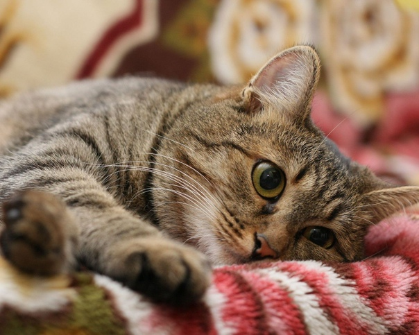
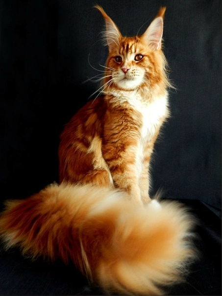
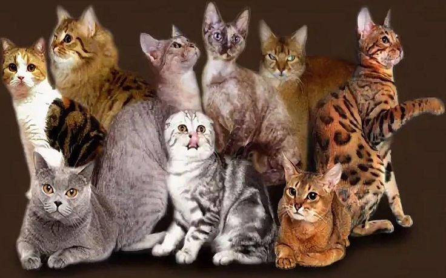
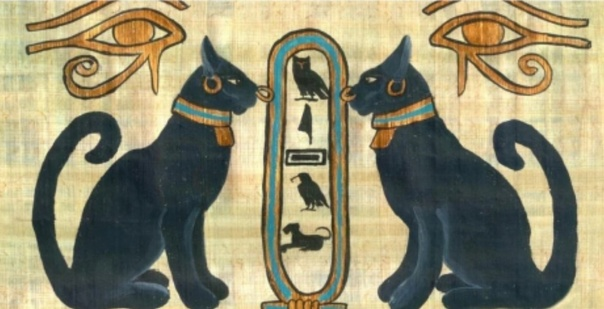
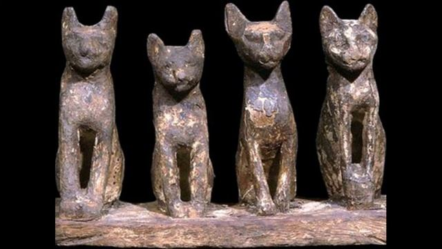

Все о кошках

Кошка — домашнее животное, одно из наиболее популярных (наряду с собаками) «животных-компаньонов» или домашних животных. Кошки — млекопитающие и плотоядные животные.
За способность уничтожать грызунов люди ценят кошек около 10 000 тысяч лет. Являясь одиночным охотником на грызунов и других мелких животных, кошка — социальное животное, использующее для общения широкий диапазон звуковых сигналов, а также феромоны и движения тела.
Породы кошек
Существует огромное количество кошек начиная от самых больших как Мейн-кун и заканчивая самыми маленькими как Сингапурская кошка

Породах кошек:
• Абиссинская: Интеллигентная и игривая порода, известная своей отличительной тикированной шерстью.
• Американская короткошерстная: Дружелюбная и неприхотливая порода, известная своей густой плюшевой шерстью.
• Американский керл: Уникальная порода с загнутыми назад ушами, что придает ей своеобразный эльфийский вид.
• Бенгальская: Экзотическая порода с пятнистой шерстью, напоминающей леопарда.
• Бирманская: Священная порода из Бирмы, известная своими голубыми глазами и шелковистой шерстью.
• Британская короткошерстная: Крупная и плюшевая порода с круглыми глазами и широкой мордой.
• Девон-рекс: Порода с большими глазами и вьющейся шерстью, напоминающей шерсть пуделя.
• Корниш-рекс: Порода с волнистой шерстью и длинным, тонким телом.
• Мейн-кун: Крупная и пушистая порода, известная своим густым хвостом и дружелюбным характером.
• Норивежская лесная кошка: Крупная и крепкая порода с густой двойной шерстью, приспособленной к суровому северному климату.
• Персидская: Длинношерстная порода с плоской мордой и выразительными глазами.
• Рагамаффин: Крупная и лохматая порода, известная своим ласковым и общительным характером.
• Русская голубая: Элегантная и грациозная порода с серо-голубой шерстью и зелеными глазами.
• Сиамская: Восточная порода с отличительными отметинами точечного окраса и голубыми глазами.
• Сфинкс: Бесшерстная порода, известная своими складками на коже и любопытным характером.
• Турецкая ангора: Длинношерстная порода с шелковистой шерстью и выразительными глазами.
• Шотландская вислоухая: Порода с загнутыми вперед ушами, что придает ей очаровательный и неповторимый вид.
• Экзотическая короткошерстная: Короткошерстная версия персидской породы с такой же плюшевой шерстью и плоской мордой.
• Японский бобтейл: Порода с коротким, загнутым хвостом и трехцветным окрасом.
Это лишь небольшой перечень из многочисленных пород кошек, каждая из которых обладает уникальными характеристиками и темпераментом. При выборе породы важно учитывать ваш образ жизни, уровень активности и личные предпочтения.
Больше информации можно посмотреть на ниже перечисленых сайтах
Уход за кошками
Уход за кошками очень важен, ведь если за ними не ухаживать у них могут появиться заболевания, и они будут не такими красивыми как вы их себе представляете
Всесторонний уход за кошкой
Кошки - популярные домашние животные, известные своей независимостью и чистоплотностью. Тем не менее, чтобы ваша кошка оставалась здоровой и счастливой, ей необходим надлежащий уход. Вот подробное руководство по всестороннему уходу за кошкой:
Питание
Кормите свою кошку высококачественным кормом для кошек, соответствующим ее возрасту и уровню активности. Ищите корма с высоким содержанием белка и низким содержанием углеводов.
Обеспечьте постоянный доступ к свежей воде. Используйте миску из нержавеющей стали или керамики, так как пластиковые миски могут содержать вредные химические вещества.
Не перекармливайте свою кошку. Ожирение является распространенной проблемой среди кошек, которая может привести к различным проблемам со здоровьем. Следуйте рекомендациям на упаковке корма и корректируйте порции по мере необходимости.
Уход
Расчесывайте кошку несколько раз в неделю, чтобы удалить лишнюю шерсть и предотвратить образование колтунов. Используйте щетку, подходящую для типа шерсти вашей кошки.
Купайте кошку по мере необходимости, обычно раз в несколько месяцев. Используйте специальный шампунь для кошек и тщательно смывайте его, чтобы не осталось остатков.
Регулярно подстригайте когти вашей кошки. Используйте когтерез, предназначенный для кошек, и подстригайте только кончики когтей.
Проверяйте уши вашей кошки еженедельно и при необходимости очищайте их ватным тампоном, смоченным в специальном растворе для чистки ушей.
Чистите зубы вашей кошки регулярно, чтобы предотвратить заболевания десен и другие стоматологические проблемы. Используйте специальную зубную щетку и зубную пасту для кошек.
Здоровье
Регулярно водите кошку к ветеринару для осмотров, вакцинаций и профилактического лечения от паразитов. Ветеринар проверит общее состояние здоровья вашей кошки, проведет необходимые анализы и назначит соответствующие вакцины и лекарства.
Следите за признаками болезни, такими как изменения в аппетите, поведении или привычках в туалете. Если вы заметили какие-либо изменения, немедленно обратитесь к ветеринару.
Обеспечьте кошке профилактическое лечение от паразитов, таких как блохи, клещи и глисты. Обратитесь к ветеринару, чтобы подобрать безопасный и эффективный препарат от паразитов для вашей кошки.
Окружающая среда
Предоставьте вашей кошке чистое и безопасное место для жизни. Регулярно убирайте дом и удаляйте любые потенциальные опасности, такие как открытые провода или ядовитые растения.
Обеспечьте кошке когтеточку, чтобы она могла удовлетворить свои инстинкты царапания. Разместите когтеточку в легкодоступном месте и приучите кошку использовать ее.
Создайте для кошки обогащенную среду с игрушками, укрытиями и местами для лазания. Это поможет стимулировать ее умственно и физически.
Эмоциональное благополучие
Кошки - социальные животные, которым необходимо общение. Уделяйте своей кошке много внимания и ласки. Играйте с ней, разговаривайте с ней и обеспечьте ей компанию.
Обеспечьте кошке множество возможностей для игр и физической активности. Используйте игрушки, когтеточки и игровые комплексы, чтобы стимулировать ее умственно и физически.
Уважайте границы своей кошки и не заставляйте ее делать то, что ей не нравится. Кошки - независимые существа, и им иногда нужно побыть в одиночестве.
Особые потребности
Кошки разного возраста и состояния здоровья имеют особые потребности. Например, котятам требуется более частое кормление и ветеринарный уход, а пожилым кошкам может потребоваться специальная диета и лекарства.
Если у вашей кошки есть какие-либо заболевания, следуйте указаниям ветеринара по уходу за ней. Это может включать в себя специальные диеты, лекарства или модификации окружающей среды.

Здоровье кошек
Здоровье кошек имеет первостепенное значение для их общего благополучия и долголетия. Регулярные ветеринарные осмотры, вакцинации и профилактическое лечение от паразитов помогают предотвратить заболевания и поддерживать здоровье кошек. Обеспечивая своей кошке надлежащий уход, вы можете помочь ей прожить долгую и здоровую жизнь.
Кошки в культуре

Кошки в древнем Египте
Кошки играли важную роль в культуре Древнего Египта. Они почитались как священные животные, связанные с богиней Бастет. Египтяне верили, что кошки обладают магическими способностями и приносят удачу и процветание.
Кошки часто изображались в египетском искусстве, включая скульптуры, картины и иероглифы. Их мумифицировали после смерти и хоронили вместе с их владельцами. Археологи обнаружили многочисленные кошачьи мумии в гробницах и храмах по всему Египту.
Египтяне также считали, что кошки обладают способностью защищать от злых духов и болезней. Их часто держали в домах и храмах в качестве домашних животных и охранников. Говорили, что кошки могут видеть духов и призраков, и их присутствие приносило комфорт и защиту.
Почитание кошек в Древнем Египте достигло своего пика во время правления XXII династии (около 945-715 гг. до н.э.), когда город Бубастис стал центром культа кошек. Ежегодно в Бубастисе проводился большой фестиваль в честь Бастет, на который стекались люди со всей страны со своими кошками.
Влияние египетской культуры кошек распространилось и на другие части древнего мира. Греки и римляне переняли у египтян почитание кошек и считали их священными животными, связанными с богинями Артемидой и Дианой соответственно.
Сегодня кошки по-прежнему почитаются во многих культурах по всему миру, и их часто связывают с удачей, магией и защитой. Наследие древнеегипетского почитания кошек продолжает жить и сегодня, вдохновляя искусство, литературу и популярную культуру.